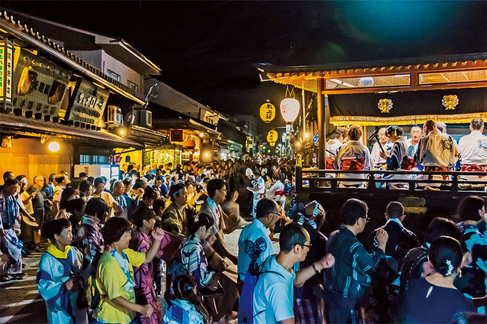
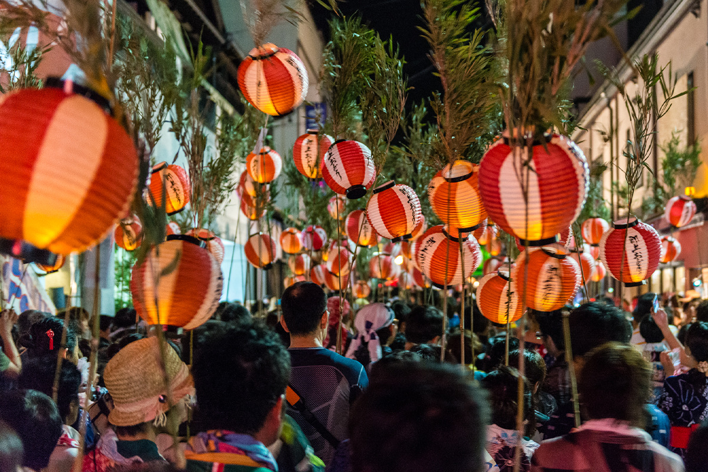
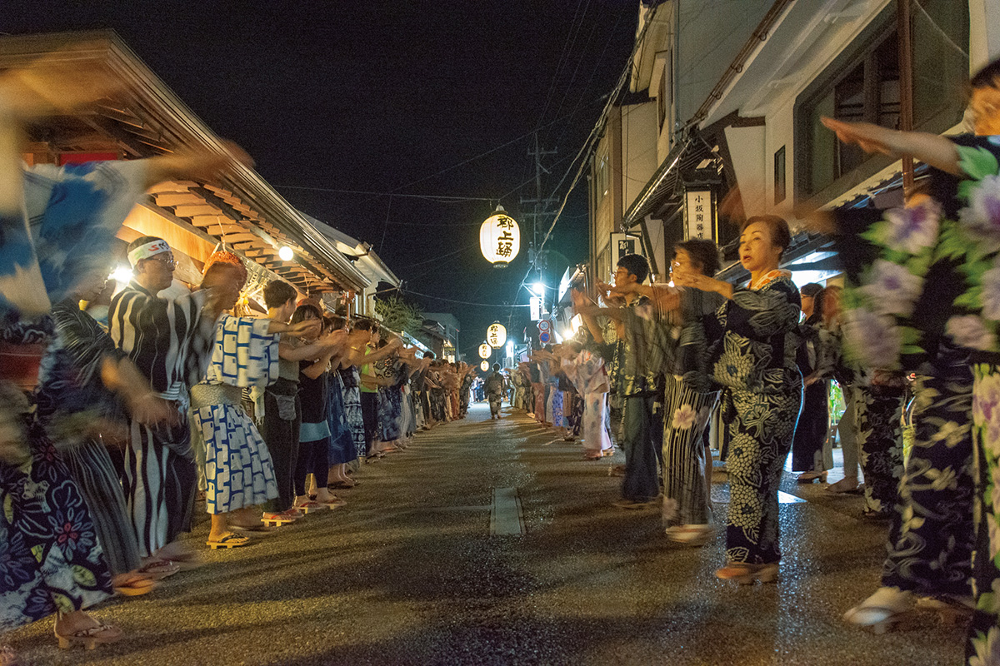
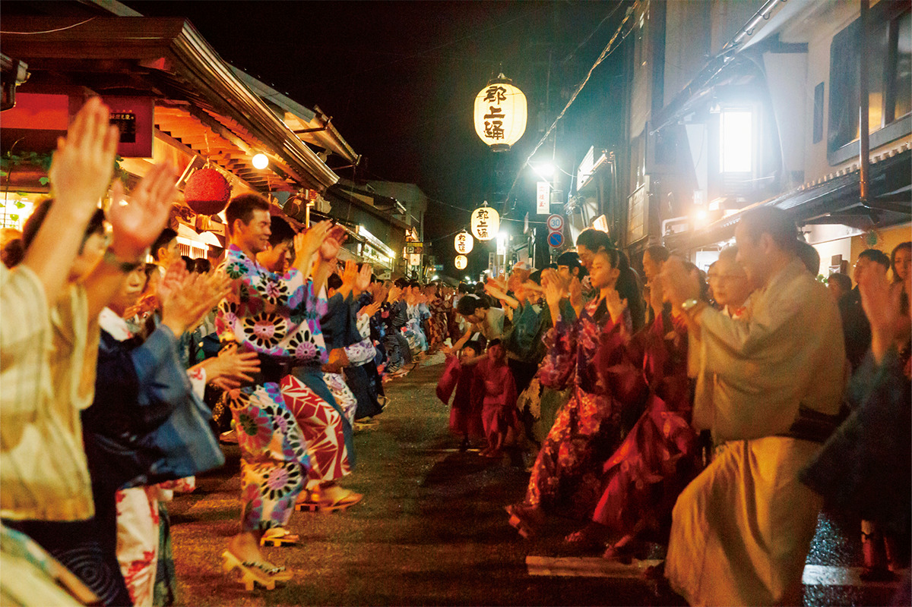
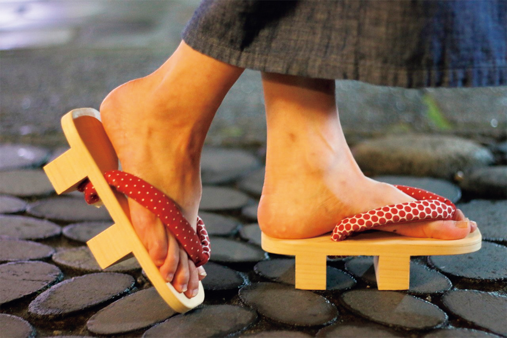
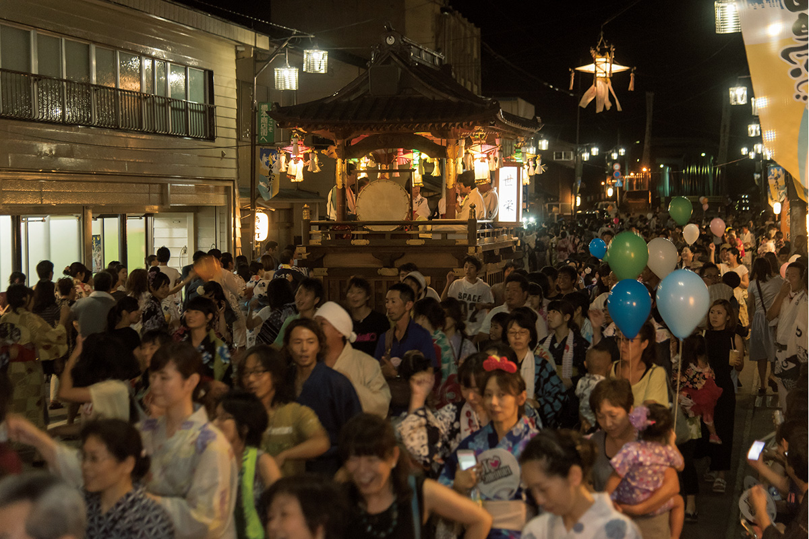

Префектура Гифу · Гудзё-Хатиман и Сиротори · фестиваль
Гудзё-одори: тридцать летних ночей танцев и четыре ночи до рассвета

Каждое лето старый замковый город Гудзё-Хатиман на 30 ночей превращается в одну большую танцевальную площадку. Зрителей здесь почти нет: в круг может встать любой, а в середине августа танцуют до самого рассвета, а танцуют десятки тысяч человек.
Фестиваль
Город, где танцует каждый
Гудзё-Хатиман лежит в горах префектуры Гифу, под стенами старого замка, и его старые кварталы до сих пор хранят облик замкового города. С середины июля до начала сентября здесь проходят Гудзё-одори, летние танцы бон-одори, которые длятся в общей сложности 30 ночей. Их считают одними из трёх великих бон-одори Японии, а по накалу страстей мало какие танцы в стране могут с ними сравниться.
Каждую ночь танцуют в одном месте, но места всё время меняются. Это может быть улица старого города, площадь на перекрёстке или, как в старину, двор святилища. Танцы начинаются в 20:00.

В репертуаре десять мелодий, среди них «Кавасаки», «Харукома» и «Нэко-но ко». Музыканты сидят на якате, передвижной сцене: там поют, играют на сямисэне, барабане и флейте. Танцоры окружают сцену и танцуют без перерыва. Никакого разрешения, чтобы войти в круг, не нужно: участвовать может любой.

Кульминация
Четыре ночи до утра
Пик фестиваля приходится на 13–16 августа, дни праздника Обон. Эти четыре ночи танцы идут с восьми вечера до рассвета, примерно до четырёх утра и позже, и называются «ночные танцы до утра». Ради рассветного часа, когда восторг толпы достигает предела, в Гудзё каждый год съезжаются танцоры со всей страны.

Писатель, который много лет изучает японские праздники и сам не раз танцевал в Гудзё, говорит, что Гудзё-одори не смотрят, а танцуют вместе со всеми. Движения можно перенимать у соседей. Обуться лучше в гэта, деревянные сандалии: удар гэта о мостовую тоже становится частью ритма. Танцевальные гэта продаются прямо в городе и годятся как сувенир.

Гудзё-одори
- Адрес
- префектура Гифу, Гудзё, Хатиман-тё (места танцев меняются каждую ночь)
- Телефон
- +81 575-67-0002 (Ассоциация туризма Гудзё-Хатимана)
- Даты
- с 11 июля по 5 сентября 2026 года, 30 ночей; при небольшом дожде не отменяют
- Часы работы
- будни и воскресенье 20:00–22:30, суббота 20:00–23:00; 13–16 августа до 5:00 следующего утра
- Цены / Вход
- бесплатно
- Как добраться
- от станции Гудзё-Хатиман линии Нагарагава около 20 минут пешком; на машине около 5 минут от развязки Гудзё-Хатиман скоростной дороги Токай-Хокурику
- Сайт
- gujohachiman.com
История
Танцы, которые не останавливала даже война
Праздники и бон-одори в Японии прерывались и раньше, например в годы Тихоокеанской войны. Гудзё-одори танцевали даже 15 августа 1945 года, в день, когда по радио прозвучало обращение императора о капитуляции: в ту ночь танцевали в память о погибших.
В 2020 и 2021 годах из-за пандемии танцы прошли только в виде онлайн-трансляций. Для жителей Гудзё и поклонников танцев со всей страны это было тяжёлое время. В 2022 году Гудзё-одори вернулись: вместо привычных тогда 31 ночи танцевали 17, с сокращённым временем и ограничением числа участников, а ночные танцы в дни Обона в тот год длились только до часу ночи.
Прогулка
Город воды перед танцами
Танцы начинаются в восемь вечера, и до этого времени есть смысл не спеша погулять по старому городу, постепенно настраиваясь на ночь. Через центр Гудзё-Хатимана течёт чистая река Ёсида. Вдоль мощёных улочек бегут каналы, а повсюду стоят «мидзубунэ», каменные водоёмы, куда отводят родниковую и горную воду. Где бы вы ни шли, всюду слышен плеск воды: Гудзё-Хатиман по праву зовут городом воды.
Раньше перед танцами многие заходили в «Тэнтоку-ю», последнюю общественную баню города, где можно было поболтать с местными. В июне 2017 года баня закрылась, но в округе Гудзё есть несколько онсэнов, где можно искупаться днём, а потом пройтись по вечерним улицам с веером в руке.
Под шум воды почему-то хочется лапши. Вода в Гудзё-Хатимане хорошая, и недорогих лапшичных здесь много. Писатель, о котором шла речь выше, каждый раз колеблется, куда пойти. В этот раз он выбрал «Мацубая», заведение, открытое в 1914 году. Он приходит туда за соба, но неизменно заказывает чука-соба, японский вариант китайской лапши в бульоне. Пока пьёшь мягкий бульон, тело и душа снова настраиваются на танцы.
«Мацубая»
- Адрес
- префектура Гифу, Гудзё, Хатиман-тё, Хасимото-мати, 908
- Телефон
- +81 575-65-2271
- Часы работы
- 11:00–22:30, по субботам фестиваля и в ночи танцев до утра работает дольше
- Выходные
- четверг
Сиротори
Вторые танцы до утра
В округе Гудзё есть ещё одни танцы, от которых без ума поклонники бон-одори: Сиротори-одори в посёлке Сиротори. По скоростной дороге Токай-Хокурику до него около 30 минут на машине, но воздух здесь совсем другой. Гудзё-Хатиман хранит дух замкового города, а Сиротори был центром культа священной горы Хакусан, и вокруг него со всех сторон чувствуется мир гор.

Сиротори-одори вобрали в себя этот горный характер. Они скромнее по размаху, но мелодии быстрее, а страсти не меньше. По сравнению с отточенными танцами замкового города у Сиротори-одори более глубокое, не сглаженное обаяние. Писатель вспоминает, что, впервые попав на площадку, он дрожал от восторга. Обычно их танцуют около 20 ночей за лето, а танцы до утра здесь проходят 13–15 августа.
Если приехать в эти дни, можно танцевать в обоих местах за одну поездку. Писатель, который однажды так и сделал, признаётся, что сильнее впечатления от бон-одори у него не было. Расписание и часы иногда меняются в последний момент, поэтому перед поездкой стоит проверить их на официальных сайтах.
Сиротори-одори
- Адрес
- префектура Гифу, Гудзё, Сиротори-тё (места танцев меняются)
- Телефон
- +81 575-82-5900 (Ассоциация туризма Сиротори)
- Даты
- 9, 18, 19, 24–26, 31 июля; 1, 2, 8, 9, 13–17, 20, 22, 29 августа; 19, 20 сентября 2026 года; при небольшом дожде не отменяют
- Часы работы
- будни и воскресенье 20:00–22:00, суббота 20:00–23:00; 13–15 августа до 4:00 следующего утра
- Цены / Вход
- бесплатно
Фото: Ассоциация туризма Гудзё-Хатимана, Ассоциация туризма Сиротори, Кэйко Оиси.